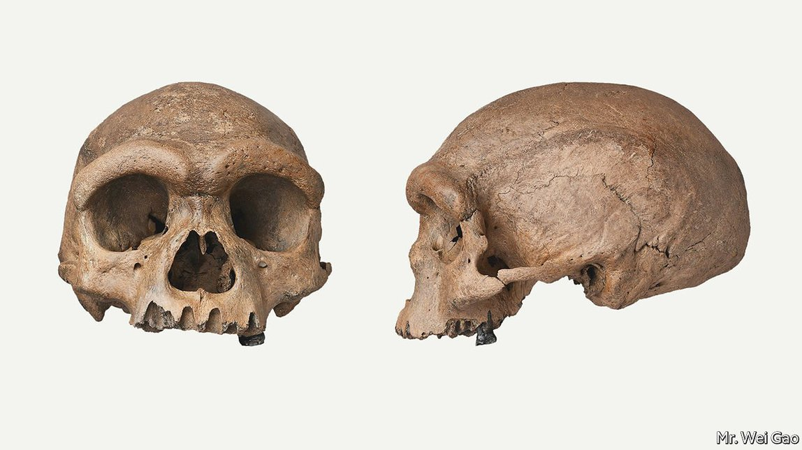

Text
2021-07-31T12:35:28+00:00
Palaeoanthropology
古人类学
古人類學
A new human species may have been identified
可能发现了新人种
可能發現了新人種
Or perhaps the first cranium of one already known
也可能是发现了已知人种的首个头盖骨
也可能是發現了已知人種的首個頭蓋骨

TWO NEW studies add further pieces to the jigsaw puzzle that is human evolution. One reports a potential extra member of the genus Homo. The other casts light on possible interbreeding between three human species in the Middle East.
两项新研究为人类进化的拼图又添加了几块。其中一项称人属可能有了新成员，另一项揭示了三个人种可能曾在中东杂交繁殖。
兩項新研究為人類進化的拼圖又添加了幾塊。其中一項稱人屬可能有了新成員，另一項揭示了三個人種可能曾在中東雜交繁殖。
Homo longi—“Dragon man” as translated into English from Chinese, via Latin—is not a novel find, but a reinterpretation of an existing one. The cranium in question was dug up in Harbin in 1933 and is held at Hebei GEO University, in Shijiazhuang. It is 146,000 years old and was originally badged as an archaic form of Homo sapiens. But Ni Xijun and Ji Qiang, who work at the university, disagree. As they report in the Innovation, the cranium would indeed have contained a brain similar in size to a modern human’s, but the fossil is too large to be sapiens and has molars and eye sockets which dwarf those of people today. Dr Ni and Dr Ji also realised that it is too long and low to be sapiens. It lacks the roundness of a modern human cranium.
“龙人”（拉丁文属种名为Homo longi）不是一个全新发现，而是对一项既有发现的重新诠释。这枚头盖骨于1933年在哈尔滨被发掘出来，现保存在石家庄的河北地质大学。它的生活年代距今14.6万年，最初被认为是智人的一种古老形式。但供职于这所大学的倪喜军和季强不同意这种观点。他们在《创新》期刊上发表的报告称，这个头盖骨确实容得下一个与现代人尺寸相似的大脑，但这块化石太大，不可能是智人的，而且它有着比现代人大得多的臼齿和眼窝。两位研究者还发现，这个头盖骨太长太低，不可能是智人。它不像现代人的头盖骨那样饱满浑圆。
“龍人”（拉丁文屬種名為Homo longi）不是一個全新發現，而是對一項既有發現的重新詮釋。這枚頭蓋骨於1933年在哈爾濱被發掘出來，現保存在石家莊的河北地質大學。它的生活年代距今14.6萬年，最初被認為是智人的一種古老形式。但供職於這所大學的倪喜軍和季強不同意這種觀點。他們在《創新》期刊上發表的報告稱，這個頭蓋骨確實容得下一個與現代人尺寸相似的大腦，但這塊化石太大，不可能是智人的，而且它有着比現代人大得多的臼齒和眼窩。兩位研究者還發現，這個頭蓋骨太長太低，不可能是智人。它不像現代人的頭蓋骨那樣飽滿渾圓。
This is good news for supporters of the recent-African-origin theory, which holds that most non-African human beings alive today are descendants of a small number of migrants who crossed to Asia from the Horn of Africa about 60,000 years ago, meaning that any non-African human fossil from before that date is probably of another species descended from earlier, non-sapiens departures from Africa.
这对晚近非洲起源论的支持者来说是个好消息。该理论认为，如今在世的大多数非洲以外地区人类都是大约六万年前从非洲之角迁移到亚洲的一小批移民的后代，这意味着任何源自这个时间点之前的非洲以外人类化石很可能是另一个物种，是更早离开非洲的非智人的后代。
這對晚近非洲起源論的支持者來說是個好消息。該理論認為，如今在世的大多數非洲以外地區人類都是大約六萬年前從非洲之角遷移到亞洲的一小批移民的後代，這意味着任何源自這個時間點之前的非洲以外人類化石很可能是另一個物種，是更早離開非洲的非智人的後代。
The question was, which earlier species did the Harbin fossil represent? By comparing it with known archaic humans, including Homo erectus, Homo floresiensis, Homo heidelbergensis and Homo neanderthalensis, Dr Ni and Dr Ji concluded that it was none of them, and must therefore be new to science and so worthy of its own name. There is, however, one other possibility—for there is a now-extinct type of human of which no cranium has yet been identified. Homo denisova’s existence was established by the extraction of DNA from a finger bone, and traces of that DNA, a remnant of interspecies breeding, still exist in modern humans, notably in China. Since one of the Harbin fossil’s molars perfectly matches the size and root structure of a molar from the Denisova cave in Russia, after which Homo denisova is named, it may be that Dr Ni and Dr Ji have actually identified the first Denisovan cranium.
问题是，这块在哈尔滨发现的化石到底代表了哪个更早期的人种？倪喜军和季强将它与包括直立人、弗洛勒斯人、海德堡人和尼安德特人在内的已知古人类相比较，得出的结论是它不属于上述任何一种，因此必然是科学界的新发现，理应有它自己的专属名称。然而还存在另一种可能性——因为还有一种现已灭绝的人种，它的头盖骨尚未被发现过。丹尼索瓦人的存在是通过提取自一根指骨的DNA证实的，该DNA的痕迹——种间杂交繁殖的遗传物质——仍然存在于现代人类中，尤其是在中国。由于哈尔滨化石的一颗臼齿与在俄罗斯丹尼索瓦洞穴（丹尼索瓦人因此得名）中发现的一枚臼齿的尺寸和牙根结构完全吻合，所以倪喜军和季强有可能实际上是发现了第一块丹尼索瓦人的头盖骨。
問題是，這塊在哈爾濱發現的化石到底代表了哪個更早期的人種？倪喜軍和季強將它與包括直立人、弗洛勒斯人、海德堡人和尼安德特人在內的已知古人類相比較，得出的結論是它不屬於上述任何一種，因此必然是科學界的新發現，理應有它自己的專屬名稱。然而還存在另一種可能性——因為還有一種現已滅絕的人種，它的頭蓋骨尚未被發現過。丹尼索瓦人的存在是通過提取自一根指骨的DNA證實的，該DNA的痕迹——種間雜交繁殖的遺傳物質——仍然存在於現代人類中，尤其是在中國。由於哈爾濱化石的一顆臼齒與在俄羅斯丹尼索瓦洞穴（丹尼索瓦人因此得名）中發現的一枚臼齒的尺寸和牙根結構完全吻合，所以倪喜軍和季強有可能實際上是發現了第一塊丹尼索瓦人的頭蓋骨。
The other study, published in Science by Israel Hershkovitz of Tel Aviv University, also speaks to the question of interspecific interbreeding. Even supporters of the recent-African-origin theory recognise that there was, in addition, an earlier “leakage” of Homo sapiens from north-east Africa into the Levant. Dr Hershkovitz and his colleagues have been examining fossils of relevant antiquity—120,000-140,000 years—collected from Nesher Ramla, a site in Israel. These, they found, have sapiens-like jaw bones, Neanderthal-like molars and crania similar to those of Homo erectus. This suggests to them that they are the product of miscegenation between all three.
特拉维夫大学的伊斯雷尔·赫斯科维兹（Israel Hershkovitz）在《科学》上发表的另一项研究也指向了种间杂交问题。此外就连晚近非洲起源论的支持者也承认，有更早期的智人从非洲东北部“渗漏”到了黎凡特。赫斯科维兹和他的同事一直在研究古老程度相近的化石，这些化石距今12到14万年，从以色列内舍尔·拉姆拉（Nesher Ramla）遗址收集而来。他们发现，这些化石有类似智人的颌骨、类似尼安德特人的臼齿和类似直立人的头盖骨。这表明它们是三者混种杂交的产物。
特拉維夫大學的伊斯雷爾·赫斯科維茲（Israel Hershkovitz）在《科學》上發表的另一項研究也指向了種間雜交問題。此外就連晚近非洲起源論的支持者也承認，有更早期的智人從非洲東北部“滲漏”到了黎凡特。赫斯科維茲和他的同事一直在研究古老程度相近的化石，這些化石距今12到14萬年，從以色列內舍爾·拉姆拉（Nesher Ramla）遺址收集而來。他們發現，這些化石有類似智人的頜骨、類似尼安德特人的臼齒和類似直立人的頭蓋骨。這表明它們是三者混種雜交的產物。
That so much interbreeding went on between groups of people who had evolved separately for hundreds of thousands of years is intriguing. Besides the imprint of Denisovan genes in modern Asians, it is also known that modern Europeans bear traces of Neanderthals and that some modern Africans similarly bear the imprint of a “ghost” hominid for which no fossil evidence has yet been found. The ancestry of Homo sapiens, it seems, is less a family tree than a worldwide web. ■
各自独立进化了几十万年的人类种群间竟存在这么多混种繁殖，真是耐人寻味。除了现代亚洲人身上携带丹尼索瓦人的基因痕迹，人们也已知现代欧洲人带有尼安德特人的基因，一些现代非洲人身上也有“幽灵”原始人的印记——虽然至今尚未找到化石证据。看来，智人的起源与其说是一张族谱图，不如说更像全球互联网。
各自獨立進化了幾十萬年的人類種群間竟存在這麼多混種繁殖，真是耐人尋味。除了現代亞洲人身上攜帶丹尼索瓦人的基因痕迹，人們也已知現代歐洲人帶有尼安德特人的基因，一些現代非洲人身上也有“幽靈”原始人的印記——雖然至今尚未找到化石證據。看來，智人的起源與其說是一張族譜圖，不如說更像全球互聯網。